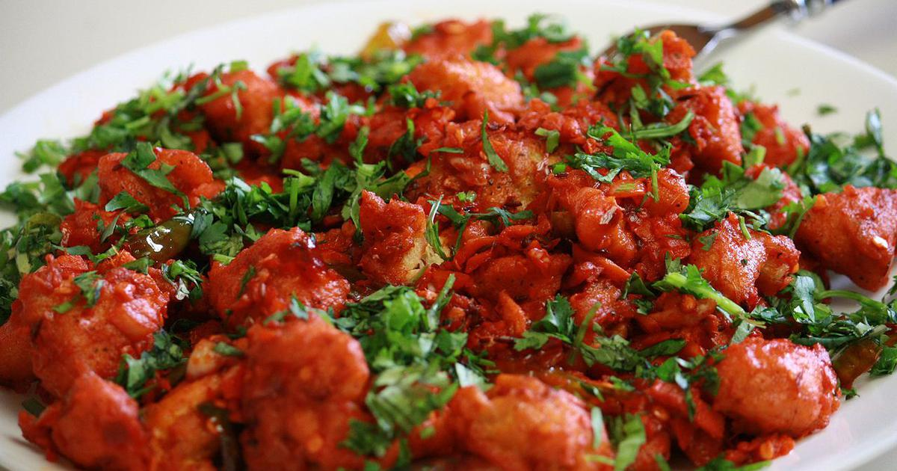

About us
ABOUT THE BLOG
What started as a small space to share Baby food and kids' recipes, over the years has grown into a larger community for learning simple & healthy Indian cooking. Kudos to the Readers for making Swasthi's Recipes one of the Top Indian Food Blogs!
WHAT YOU WILL FIND ON SWASTHI'S
The recipes on this blog reflect my life, as a mom & wife I need delicious meals the whole family will enjoy.
I share only recipes that are tried, tested and cherished by my family. What you see on the
blog is what I make for my loved ones - family & friends.
I value our readers' time above all, so to avoid confusions and failures all the recipes
are well written with step by step photos.
I share only recipes that are tried, tested and cherished by my family. What you see on the
I also share videos where ever needed or possible.
You can find food recipes for all seasons, every mood and any age group. Whether you are a
newbie or an experienced cook,
I am sure you will find exciting & practically possible recipes here that
will enhance your cooking skills.
if you are new to this blog and do not know where to start, You can check my Latest
Indian Recipes here.
FOCUS ON HEALTH
I am a health freak and a food freak. I believe in eating wholesome foods for a happy mind
and healthy body. So you will find lot of whole grain recipes made using Millets, Ragi, Oats & Quinoa
suitable to folks of all age groups including the aged.
Most of the everyday food recipes shared here call for ingredients that are rich, wholesome,
& nourishing to the body. Most of these are free from refined or processed ingredients.
I also teach How to cook Restaurant style & Street foods in a healthy way without the use of harmful ingredients like artificial food colours, MSG, Vanaspati & other chemical additives. Most often I also try to minimise the use of refined flours and deep frying where ever possible.
Recipes
Explore Recipes
 |
|
 |
 |
 |
 |
 |
|
|
 |
 |
 |